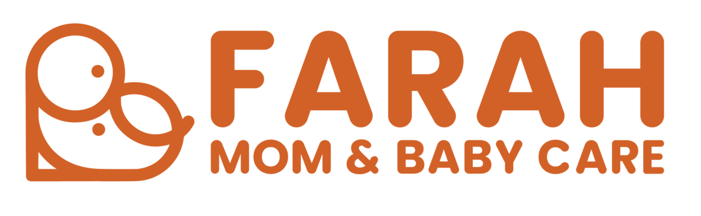
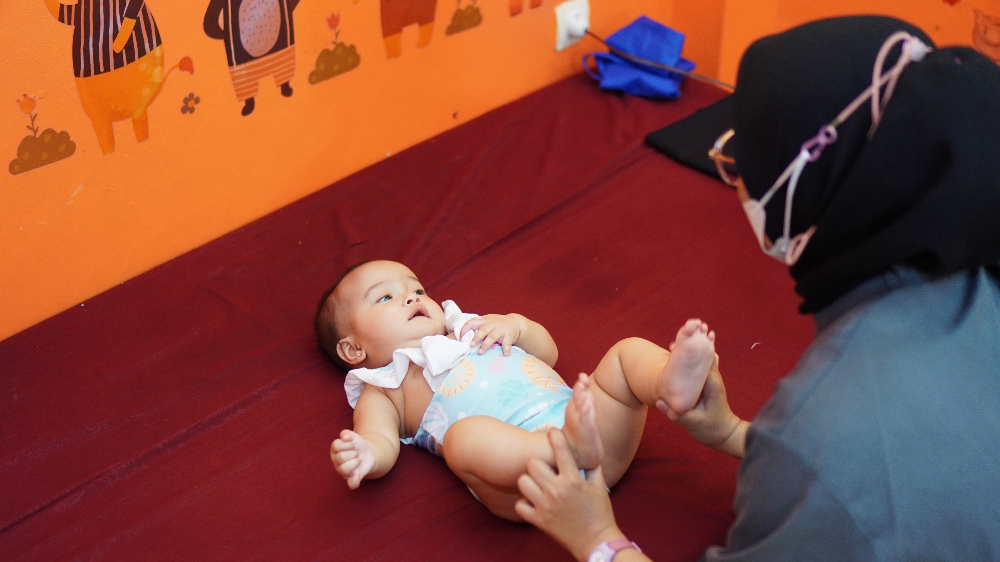
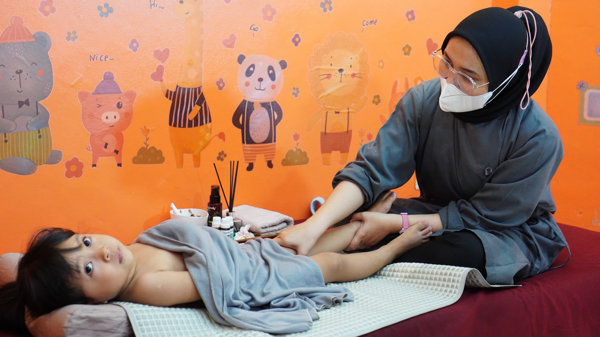
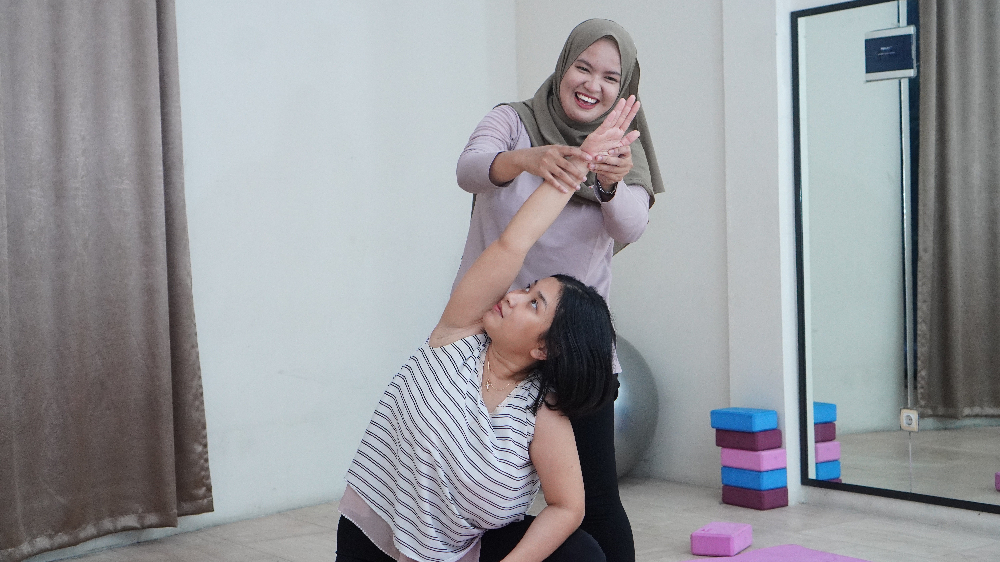
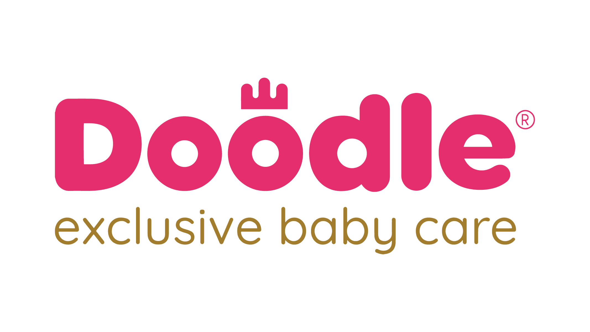
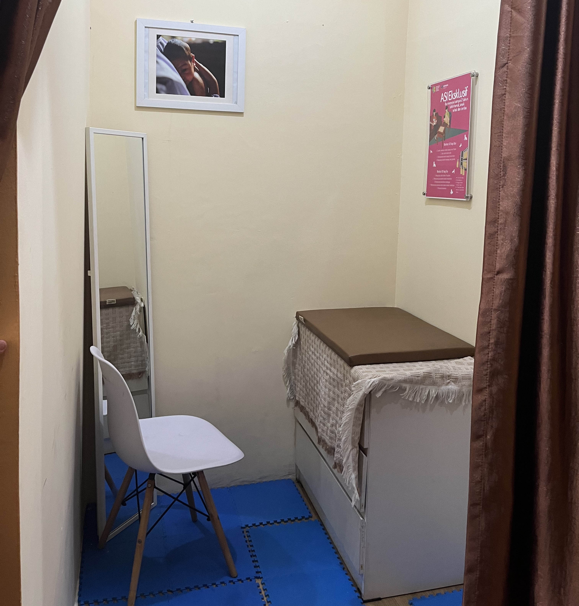
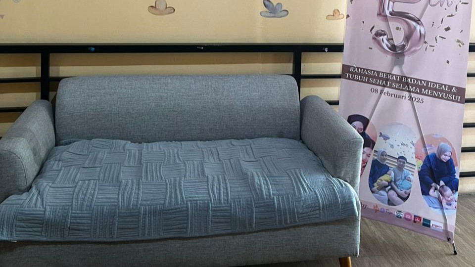
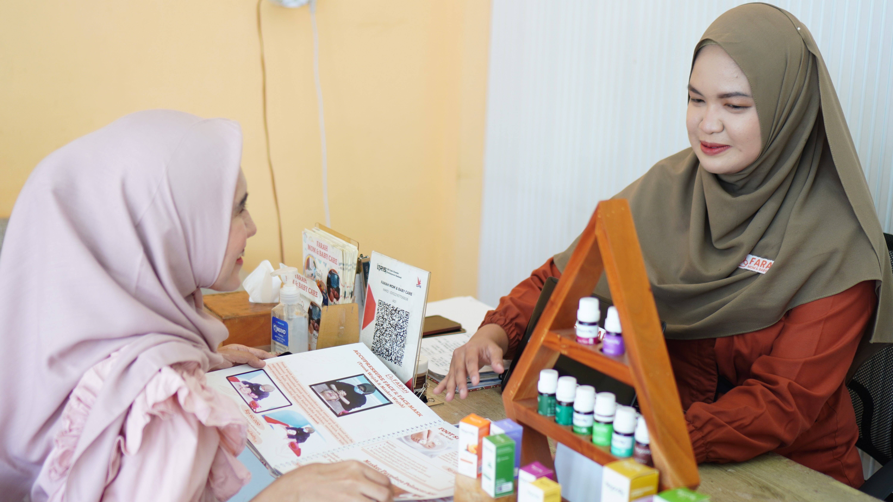
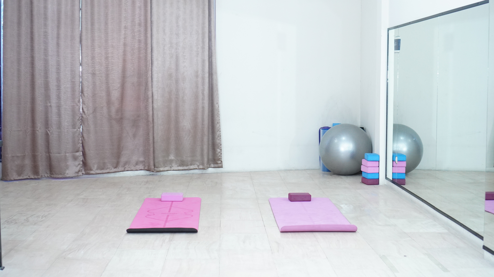

Menyiapkan kenyamanan...
Sentuhan lembut, kasih sayang hangat
Farah Mom & Baby Care menghadirkan perawatan terbaik bagi ibu dan bayi Anda.
Pesan SekarangPerawatan profesional untuk ibu dan bayi dengan sentuhan kasih sayang

Perawatan khusus bayi 0–12 bulan: Baby Massage, Baby Spa, Kids Bubble Bath, Body Mask, Tindik Telinga & Hair Cut untuk relaksasi & perkembangan motorik optimal.

Layanan anak 1–10 tahun: Pediatric Medical Massage, Bubble Bath, Body Mask — menjaga kesehatan & kreativ itas si kecil.
Lactation Massage, Postpartum Massage, Totok Wajah & Masker Wajah, Body Scrub — pemulihan pasca melahirkan yang nyaman & penuh kasih sayang.

Pregnancy Massage, Prenatal Gentle Yoga, Senam Hamil, Totok Wajah & Body Scrub — persiapan persalinan yang sehat & menyenangkan (13–41 minggu).
Klinik perawatan Ibu & Anak modern dengan sentuhan hangat dan standar medis terbaik.
Berdiri sejak 2020, Farah Mom & Baby Care hadir untuk memenuhi kebutuhan perawatan ibu dan anak yang aman, nyaman, dan berbasis medis.
Dengan tim bidan bersertifikat, fasilitas modern, serta perawatan yang penuh ketenangan, kami telah dipercaya ribuan keluarga di Bogor.
Tahun Berpengalaman
Klien per Bulan
Jangkauan Homecare

Dipercaya oleh:



Nyaman, hangat, dan didesain khusus untuk Ibu & Si Kecil







Berlokasi strategis di pusat Kota Bogor, dekat Kebun Raya dan mudah dijangkau dari seluruh area Jabodetabek. Selain layanan di outlet, Farah Mom & Baby Care juga menyediakan layanan home treatment dengan jangkauan hingga 15 KM dari lokasi kami, agar bunda bisa tetap nyaman dirawat di rumah✨
Ruko Nusa Indah, Jl. Pandu Raya No. 3
Tegal Gundil, Bogor Utara
Kota Bogor, Jawa Barat 16107
Setiap Hari: 09:00 - 17:00 WIB
Fleksibel sesuai jadwal bunda
Telp: +62 812-8415-338
WhatsApp: Chat Sekarang